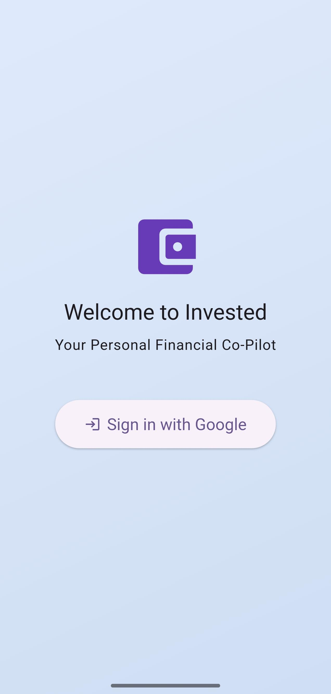
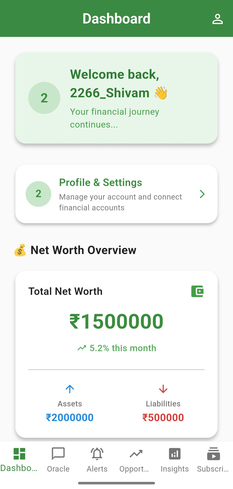
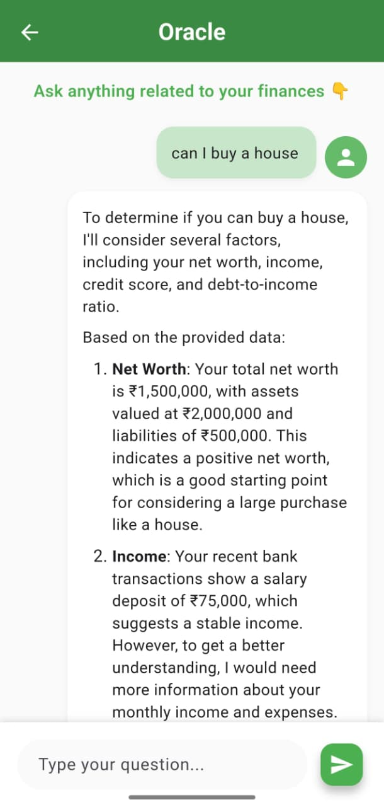
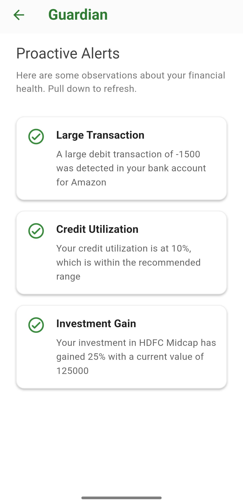
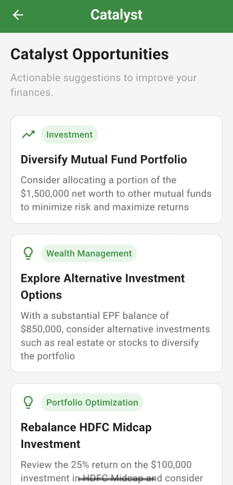

Capstone / Mini Project Documentation
Artificial Intelligence Laboratory | Academic Year 2025–26
AI-Powered Personal Finance Companion
| Student Name | Shivam |
| Roll Number | 23052266 |
| Batch / Program | 2023, CSE, B.Tech |
| Institution | KIIT DU |
| Submission Date | April 2026 |
This document is submitted in partial fulfillment of the requirements for the completion of the Capstone/Mini Project component of the curriculum.
Managing personal finances is a growing challenge for the modern Indian individual. The average working professional juggles multiple financial products simultaneously — bank accounts, credit cards, EPF (Employee Provident Fund) balances, mutual funds, and loan EMIs — yet has no single platform that consolidates all of this data and provides actionable, contextual guidance in real time.
Existing solutions like banking apps or spreadsheet trackers present raw numbers but offer no intelligent interpretation. A user who wants to know "am I investing enough for retirement?" or "do I have any suspicious transactions this month?" has to manually cross-reference multiple portals and perform their own analysis — a process that is time-consuming, error-prone, and out of reach for the financially inexperienced.
Invested is an end-to-end, multi-service personal finance application that bridges the gap between raw financial data and actionable intelligence. It acts as an AI-powered financial strategist that lives in the user's pocket.
At its core, the system uses the Model Context Protocol (MCP) — a standardised, structured interface for securely fetching a user's complete financial snapshot. This data is then processed by a FastAPI backend powered by Groq's high-speed LLaMA-3 large language models. The insights are streamed as rich, parsed responses directly to a native Flutter mobile application.
| Layer | Technology / Tool | Purpose |
|---|---|---|
| Frontend | Flutter 3.8+ / Dart | Cross-platform mobile application (Android & iOS) |
| Backend | Python 3.10+, FastAPI, Uvicorn | REST API server, AI orchestration, MCP integration |
| AI / LLM | Groq SDK, LLaMA-3 (llama3-70b-8192) | Natural language understanding and financial analysis |
| Data Server | Go 1.23+ | MCP Mock Server — structured financial data APIs |
| Authentication | Firebase Auth, Firebase Admin SDK | User login, session management, identity validation |
| Communication | HTTP/REST, Server-Sent Events (SSE) | Real-time streaming of AI responses to the mobile client |
| State Management | Flutter Provider / setState | Local UI state management in the mobile app |
| Environment | Python dotenv (.env), flutter_dotenv | Secure management of API keys and config variables |
| Dev Tools | VS Code, Android Studio, Postman | Development, testing, and API debugging |
The screenshots below illustrate the major screens and functionalities of the Invested application. Annotated descriptions are provided alongside each placeholder.





Streaming Server-Sent Events (SSE) from a FastAPI backend to a Flutter app with correct chunk parsing and live UI updates was technically challenging. This was resolved by implementing a custom Dart HTTP streaming client that appends each incoming token to the chat bubble in real time.
The project initially used Google Cloud's Vertex AI, which required billing credentials. Midway through development, the backend was migrated entirely to the Groq SDK (free tier) using LLaMA-3, requiring rewriting all tool-call definitions, function schemas, and async call logic.
The Go-based MCP Mock Server occasionally fails to respond during testing (e.g., network timeouts on Android emulators). A dedicated fallback data layer was implemented in the FastAPI backend that injects structured dummy financial data (₹15 lakh net worth, 790 credit score) so the AI agents always have valid context to respond with.
The LLM responses contained raw Markdown (bold text, bullet lists, tables) which Flutter's default Text widget cannot render. A custom Markdown rendering widget was integrated to convert the streamed response into a rich, formatted display.
Replace the Go MCP Mock Server with live connections to actual banking APIs (e.g., Account Aggregator framework in India, RBI-compliant open finance APIs). This would allow the app to pull real-time transaction data directly from the user's linked bank accounts with full consent management.
Enhance the Goals screen to allow the AI Catalyst agent to dynamically generate and adjust a month-by-month savings plan based on the user's income, expenses, and declared financial goals (home purchase, education, retirement, etc.).
Integrate a voice-to-text input layer on the Oracle chat screen, enabling users to ask financial questions hands-free — particularly useful while commuting or multitasking.
Extend the Guardian agent to send Firebase Cloud Messaging (FCM) push notifications when anomalies are detected — e.g., if a transaction above a defined threshold occurs or the credit score drops by more than 10 points.
Add regional language support (Hindi, Tamil, Kannada) for the AI responses and UI labels, drastically increasing accessibility for Tier-2 and Tier-3 city users who are less comfortable with English financial terminology.
Invested is a full-stack, AI-first personal finance application that successfully demonstrates how modern technologies — large language models, the Model Context Protocol, FastAPI microservices, and Flutter — can be combined to build a meaningful, production-grade financial tool.
The project goes well beyond a typical student CRUD application. It implements a multi-agent AI architecture where each agent (Oracle, Guardian, Catalyst, Strategist) plays a focused role; integrates a secure, structured financial data protocol (MCP); streams real-time AI responses to a beautifully designed mobile interface; and handles failure gracefully through an intelligent fallback system.
The development of this project provided hands-on experience with AI/ML integration, REST API design, cross-platform mobile development, and production reliability concerns — all highly relevant skills in today's software engineering landscape. The challenges encountered during development — particularly the AI provider migration and real-time streaming — deepened the understanding of building resilient, API-dependent systems.
With planned improvements such as real bank API integration, push notifications, and multi-language support, Invested has the potential to evolve into a fully deployable consumer product. It represents a genuine attempt at solving a real-world problem with a thoughtful, technically sound, and user-centric approach.
— End of Documentation —
Shivam M K | Capstone Project – AI Lab | April 2026